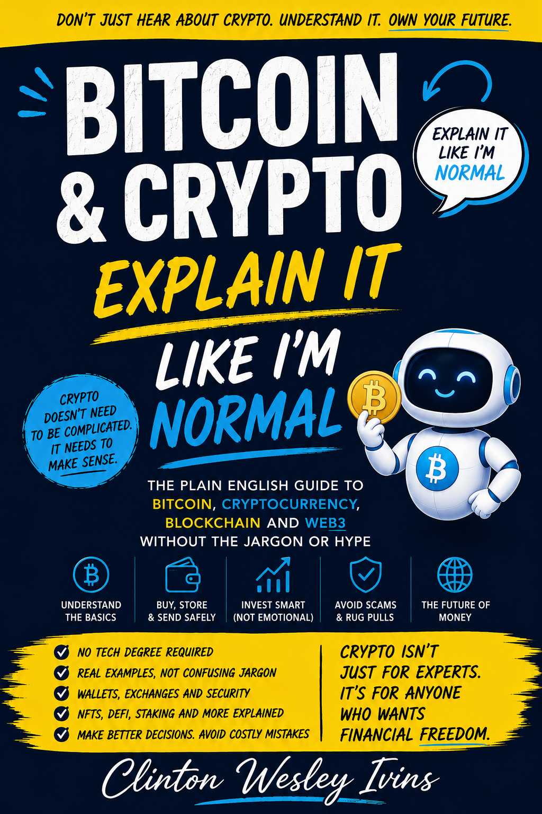
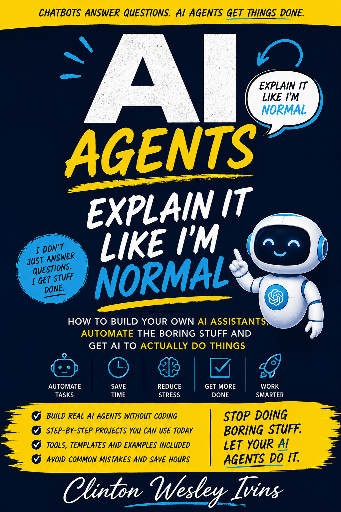
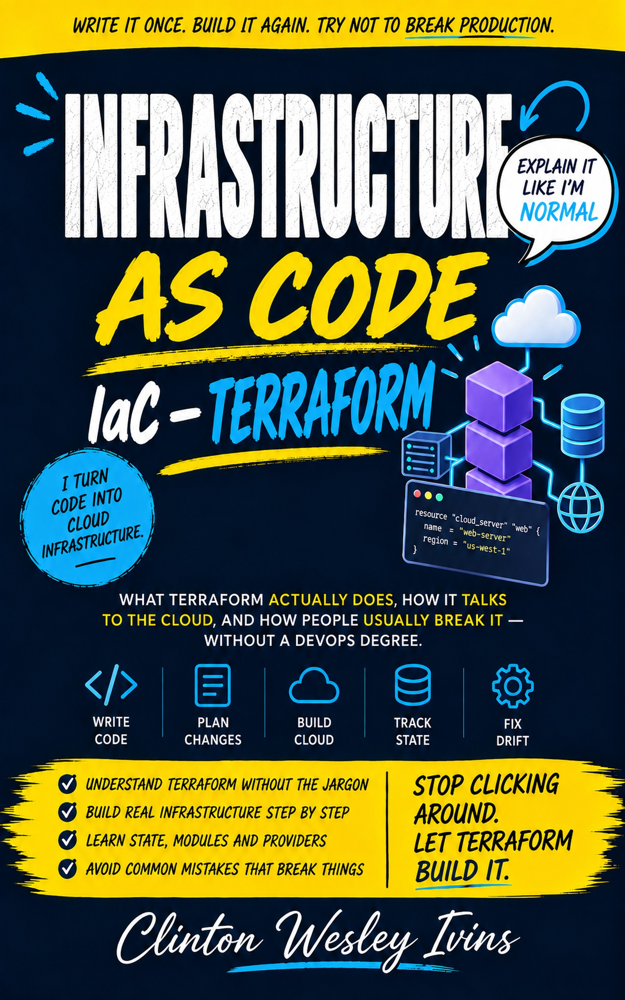
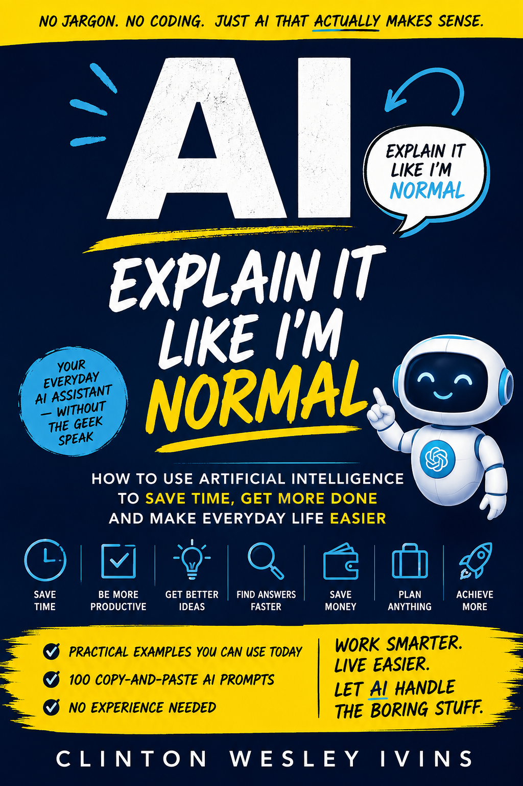
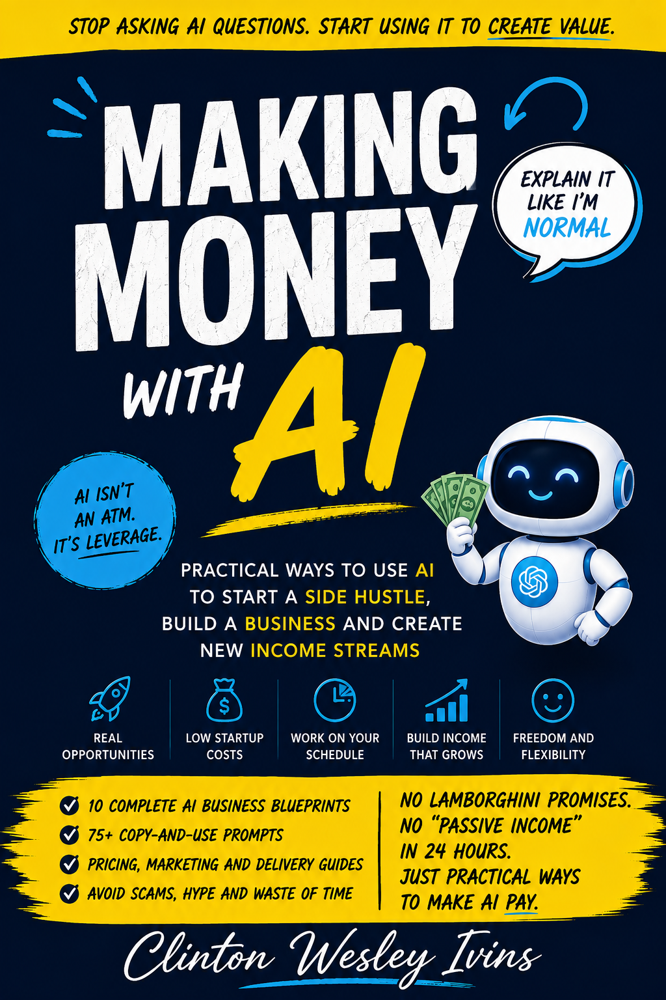
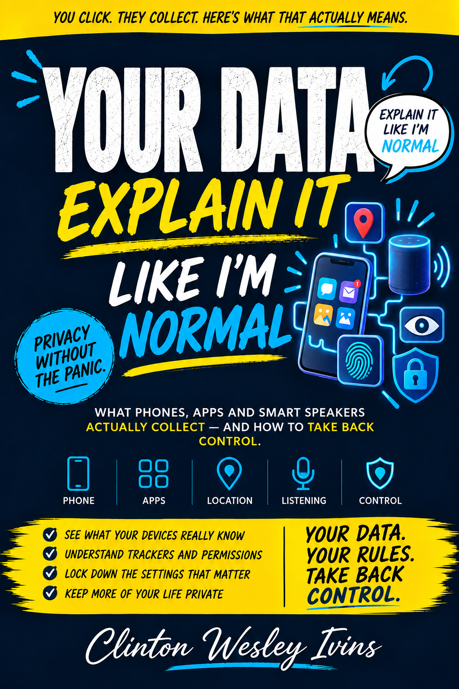
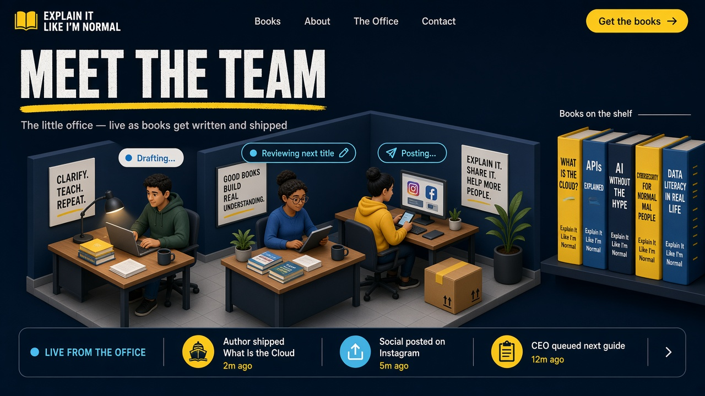

PLAIN ENGLISH. REAL UNDERSTANDING.
BIG TECH IDEAS.
FINALLY,
THEY MAKE SENSE.
AI. Crypto. The cloud. You don’t need to speak tech to understand it. Just a guide who speaks your language.
✓ No jargon✓ No hype✓ Just useful answers
THE EXPLAIN IT LIKE I’M NORMAL SERIES



Big ideas. Zero intimidation.↗
7plain-English guides
20+years of real-world tech experience
0jargon required
For people who live with tech.
Not in it.
FROM “WHAT?” TO “GOT IT.”
THE BIG IDEA.
IN 20 SECONDS.
A little less tech confusion.
A lot more “oh, now I get it”.
Read the story
An everyday reader looks confused as AI, cloud, code, cryptocurrency and security symbols swirl around him. He opens an Explain It Like I'm Normal book. The confusion gives way to clear connections, checkmarks and an “aha!” smile. Big tech ideas. Finally, they make sense.
YOUR NEXT “OH, NOW I GET IT” MOMENT
A BIG IDEA.
A CLEAR WAY IN.
Pick the subject you’ve been meaning to understand.
We’ll take it from there.
THE LATEST GUIDE
INFRASTRUCTURE AS CODETHE CLOUD DOESN’T
HAVE TO BE
COMPLICATED.
What Terraform actually does. How it talks to the cloud. And the mistakes that trip people up. All explained in the language you already speak.
Discover the new book ↗Kindle & paperback available on Amazon 
AIAI, without the overwhelm.
Understand what AI can do, what it can’t, and how to make it useful every day.
Explore on Amazon ↗ AI AgentsPut AI to work.
Build useful assistants and automate the boring stuff, one practical step at a time.
Explore on Amazon ↗ Bitcoin & CryptoMake sense of crypto.
Get your head around Bitcoin, blockchain and Web3 — without the jargon or hype.
Explore on Amazon ↗ 
Making Money with AIIdeas you can actually use.
Explore practical ways to use AI in a side hustle or business. No overnight-rich promises.
Explore on Amazon ↗ ScamsSpot the signs. Stay safer.
Understand voice clones, fake invoices and online scams — and how to protect yourself.
Explore on Amazon ↗ 
Your DataYour data. Your decisions.
Learn what your devices collect, where it goes and how to take back control.
Explore on Amazon ↗ MEET THE PERSON BEHIND THE PLAIN ENGLISH
HI, I’M CLINT.
I MAKE TECH
MAKE SENSE.
You shouldn’t need a technical dictionary to understand the world around you.
I’m Clinton Wesley Ivins. I’ve spent over 20 years helping organisations understand, secure and use technology. Now I write books that help everyone else do the same.
My approach is simple: explain what matters, skip what doesn’t, and give you the confidence to take the next step.
CISSPCCSPMicrosoft Cybersecurity ArchitectAWS AI Practitioner
MEET THE TEAM
The little office — live as books get written and shipped

Drafting...
Reviewing next title
Posting...